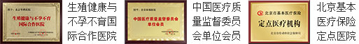

随着社会的发展、生活节奏日趋加快、生活压力逐步增大，再加上环境污染日益严重等多种因素的影响，男性精液质量近年来呈下降趋势，男性不育症患者逐渐增多。有关调查数据显示，我国男性的精液质量正以每年1%的速度下降，精子数量降幅达40%以上，与三四十年前相比，男性每毫升精液所含精子数量已从1亿个左右降至目前的2000万到4000万个，尤其是司机、白领等更是不育的高发人群，保护男人的精子，已经成为刻不容缓的大事。临床上对精子精液的一般检查有助于男性生殖能力和生殖系统疾病的诊断，这是精子精液检查最大的意义。当出现精液发黄、精液带血、精液稀薄、精液果冻状等情况的时候，男性们就必须引起高度的重视了！
据统计，已婚夫妇中有10%-15%患有不孕不育症，其中男性不育占三分之一，男性孕前精子精液检查，可以及时发现精子精液的异常情况，为正常孕育扫平障碍。男性的无精、少精、死精、弱精、精子形状异常、精液量少、精液液化不良、精子活动力差等都是引起男性不育的重要原因。北京华博不孕不育医院男性不育学科带头人甄仁晖院长介绍“不少人把不孕不育的责任归咎于女方，其实夫妻同查同治对于诊疗不孕不育是非常重要的。”
半年未育男
可能会存在弱精、少精
IT男
久坐、辐射精液质量下降
游戏男
辐射精液质量下降
喝酒男
喝酒会影响精液质量
开车男
久坐阴囊睾丸受迫影响精液
桑拿男
阴囊怕高温，引起少精死精
抽烟男
尼古丁对男性生殖健康影响
夜猫男
熬夜伤精泄气
1、检测原理：“精液脱落细胞学”检测就是将精液制成涂片，经染色后在高倍显微镜下观察（使用了显微镜的极限放大，一般为1000倍）精子的功能状态以及正常与否。精液脱落细胞学包括“精子形态学”和“生精细胞学”，包括：精子、生精细胞、粒细胞、红细胞、巨噬细胞、线索细胞、细胞骨架、结晶、细菌有形成分等的分析。
2、“精子形态学”分析：通过对精子形态进行鉴别、分类，可判断精子是否正常，又依据缺陷、畸形等精子形态特点进行不育症疾病的病因定位，确定患者的发病原因（生物的、物理的、化学的、生活中的有害因素等）。
3、“生精细胞学”分析：通过对生精细胞数量、比例进行分析，确定患者睾丸生精发育究竟停止在哪一个阶段;又通过对生精细胞凋亡形态的观察，找出导致睾丸生精障碍的具体原因，为无精症等精子异常的临床治疗提供可靠的实验室依据。
需禁欲3-7天，为确保结果准确，建议来院取精而不是在家取精。
可清晰地观察到精液质量及精子活动情况。
权威生殖医学专家详细分析精液报告，并进行健康指导。
透过实验室的玻璃幕墙，患者可以近距离地观看到检测的全部过程；通过连接显微镜的视频放大系统，患者可以清晰地观测到自己送检样本的状态，30分钟就可见“小蝌蚪”是否生猛。[点击咨询]
取精室究竟是怎么样的?很多人觉得取精室是一个神秘的地方，取精室会不会好像医院的病房一样阴森恐怖，或者会不会很黄很暴力，大家总是各种猜测着，下面给你揭秘北京华博不孕不育医院温馨的取精室。[点击咨询]
医生利用精子图像分析系统进行分析精液情况，图像分析系统由一台高分辨率的显微镜和电脑连接，同时连接了两台平板电视，患者更清晰进行观察。最后电脑打印出一份非常详细的精液检查报告单。[点击咨询]
“精子身份证”，被誉为“会说话的精子”，是通过图表、图片、视频等形式清楚地记录精子身份证拥有者的精子健康状况，有助于了解自身生殖健康，还有自己的生育机能，促进优生优育。[点击咨询]
精子精液异常通常是由于男性生殖系统疾病引起的，是造成男性不育的重要原因！精子精液异常的原因有附睾、输精管、精囊和前列腺等生殖道或生殖腺体的急慢性炎症，精索静脉曲张，免疫及内分泌因素，染色体异常等等。只有经过正规医院的专业检查，查明引起精子精液异常的具体原因，科学针对性调理治疗，才能标本兼治。
2012年7月，“首届全国不孕不育诊治经验交流会暨孕育微环境技术论证会”在国家卫生部隆重召开，孕育微环境多元诊疗体系获得在场媒体、与会专家一致好评，并经专家委员会论证，被定为国家级不孕不育先进医疗技术，由北京华博不孕不育医院临床面向全国推广应用。【详细了解】
综合评估
修复病灶
阻断氧化
应激反应
强化康复
通过生理、心理、社会三大评估体系对生殖系统、内分泌、精子精液等情况进行全面精准地评估，诊断率提高20%，为科学治疗精子畸形提供可靠、权威的临床依据。
了解技术详情患者：刘文东
地址：安徽省芜湖市
简介：“真的是太感谢王军主任了，治好了……【详细】
患者：Mena Karam Adly夫妇
地址：埃及
3月5日上午，北京华博医院迎来了……【详细】
患者：赵明海
地址：河北省保定市唐县人
简介：“我今天是特地来感谢王军主任，甄……【详细】
患者：李建国
地址：河北省河间市行别营乡
简介：2015年11月19日，李建国来医院复查……【详细】
患者：马益槐
地址：安徽省芜湖市
简介：“感谢甄仁晖院长、王军主任、宋蕊……【详细】
患者：付兴辉
地址：河北省三河市高楼镇
简介：2015年1月，付兴辉带着已经怀孕的……【详细】
山东济南
患了精子畸形症，在山东治疗了两年多一直没好，没办法来到华博试试，没想到很快就治好了。
刚刚河南郑州
婚后长期不育，甄仁晖院长帮我检查出精子畸形，经过治疗，终于能够生育了！
2小时前山西太原
生育方面有问题，妻子一直就是怀不上。去过两家医院但都没有治好，最后是在华博医院治好的。
10小时北京平谷
华博医院王军主任用孕育微环境多元诊疗体系治好了我的精子畸形，很感谢！
18小时河北承德
我患有精子畸形症，在多家医院治疗无果，最终在华博治愈，感谢华博，感谢王军主任。
1天前
内蒙赤峰
白医生不但人好，医术也高明，经他治疗后，现在媳妇儿也怀孕了，真是太感谢白医生了！
1天前